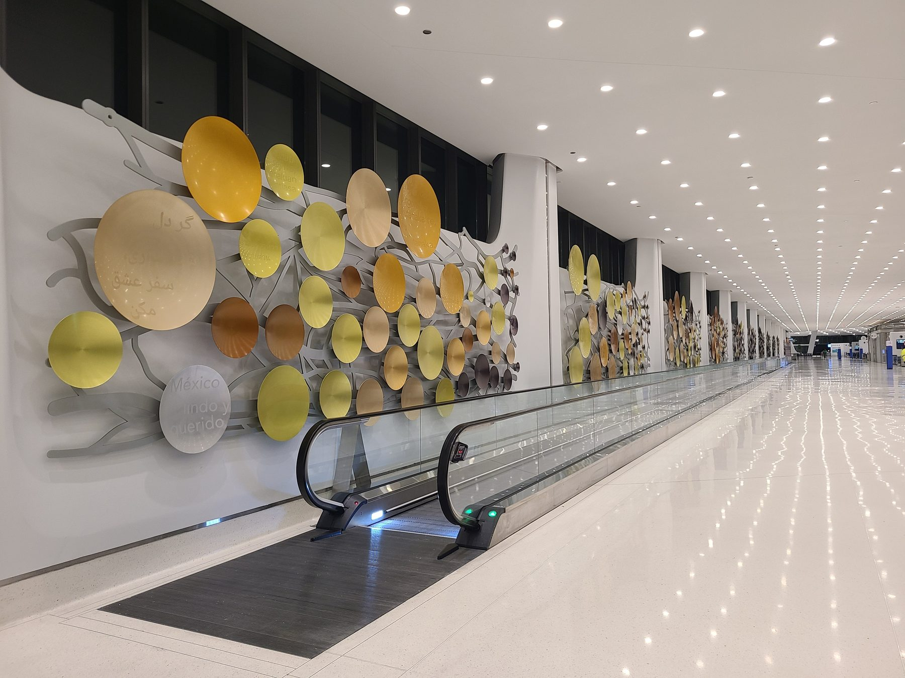
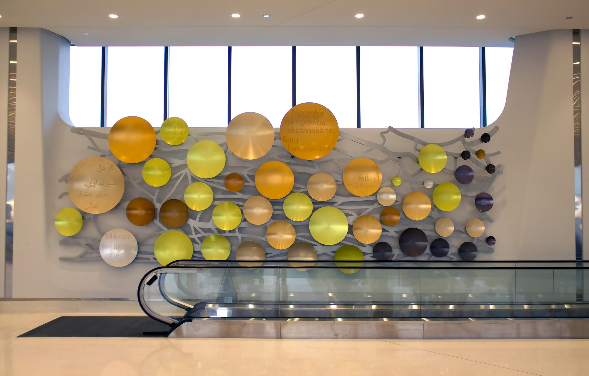
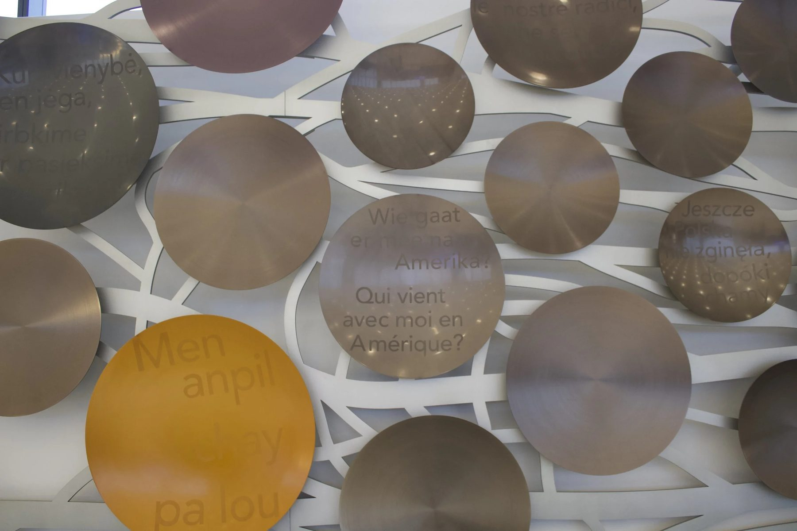
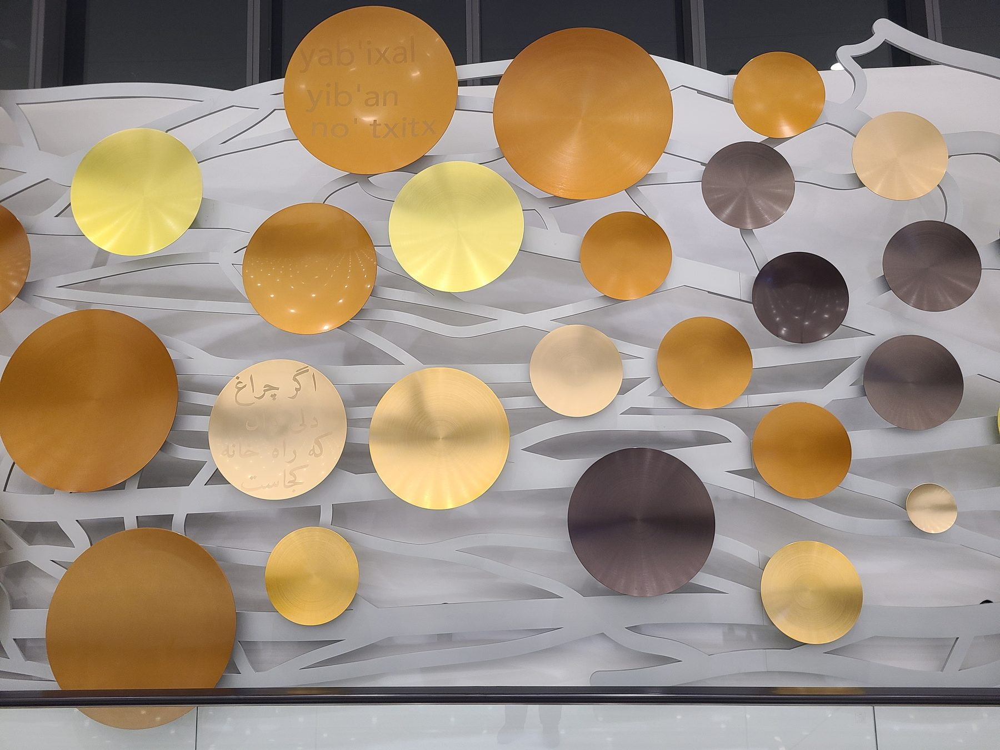
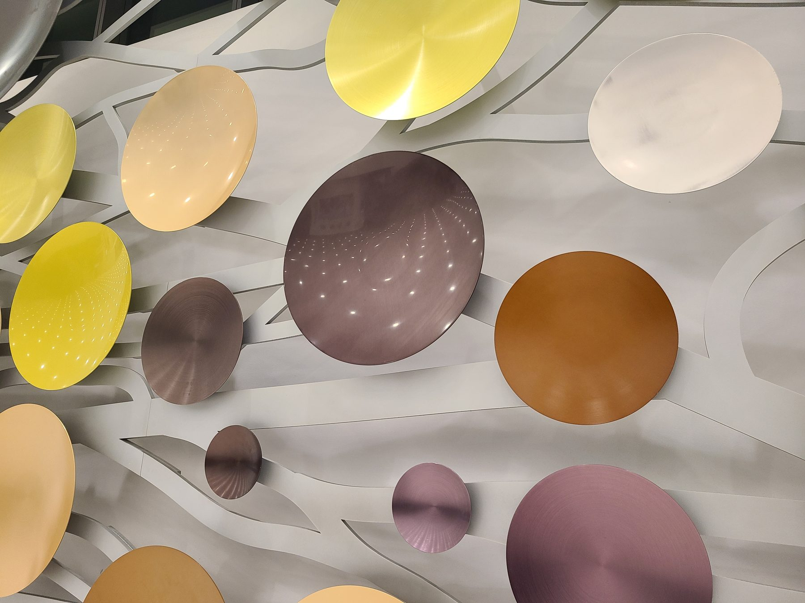
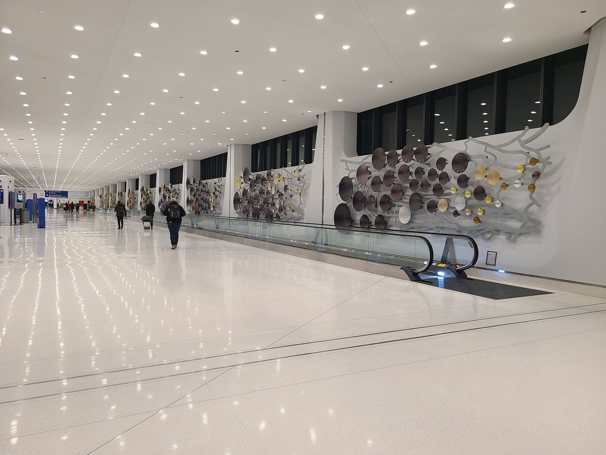
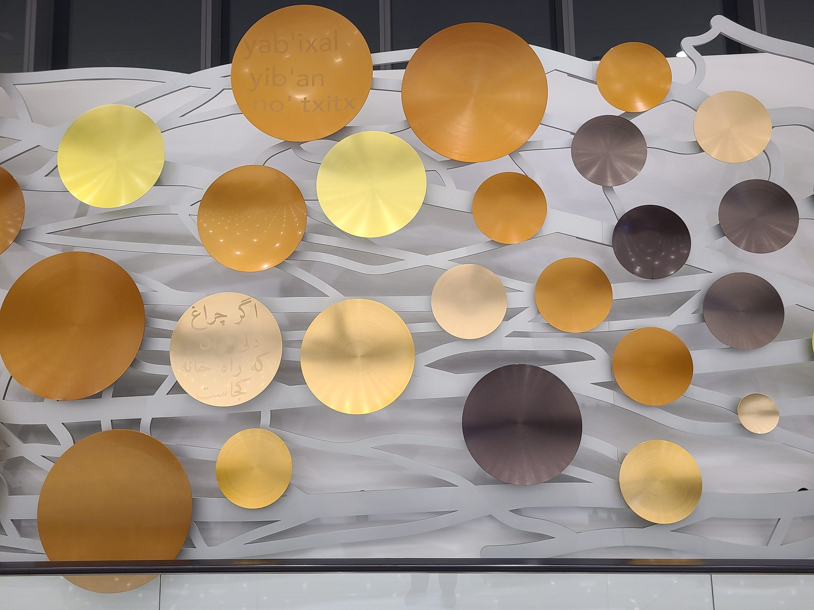
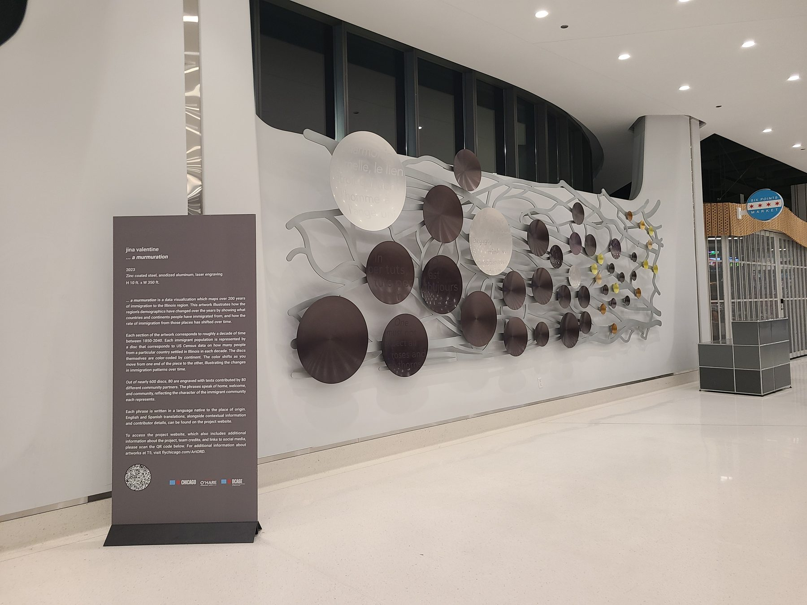

Public Art / 2023
a murmuration
Public artwork, O'Hare Terminal 5
Four hundred and fifty feet of wall in Terminal 5, and nearly six hundred convex aluminum discs charting two centuries of immigration to Illinois.
In the corridors of Chicago's O'Hare International Airport, a sweeping narrative of immigration and diversity unfolds across 450 feet of wall. "a murmuration," conceived by artist Jina Valentine and brought to life by ChiLab Studio, is a piece of data visualization built at architectural scale.
Using census data from 1850 to 2040, the installation translates demographic information into an array of colors and sizes. Nearly 600 convex aluminum discs were crafted, each varying to represent a different immigrant population and period. A color coding system ties each disc's hue to a continent of origin.
Eighty of the discs carry engraved phrases contributed by community partners, in their own languages, on the themes of home, welcome, and community.
Material selection was driven by the environment. Zinc plated steel and anodized aluminum were chosen for durability and finish stability in a high traffic terminal, and the install was sequenced around live airport operations.
Details
- Year
2023 - Location
Chicago, IL - Category
Public Art - Materials
Zinc plated steel, anodized aluminum
Credits
- Artist: Jina Valentine
- Commissioned by DCASE and the Chicago Department of Aviation
- Finishing: EH Schwab, Pioneer Metal, Gatto Metal
Index








